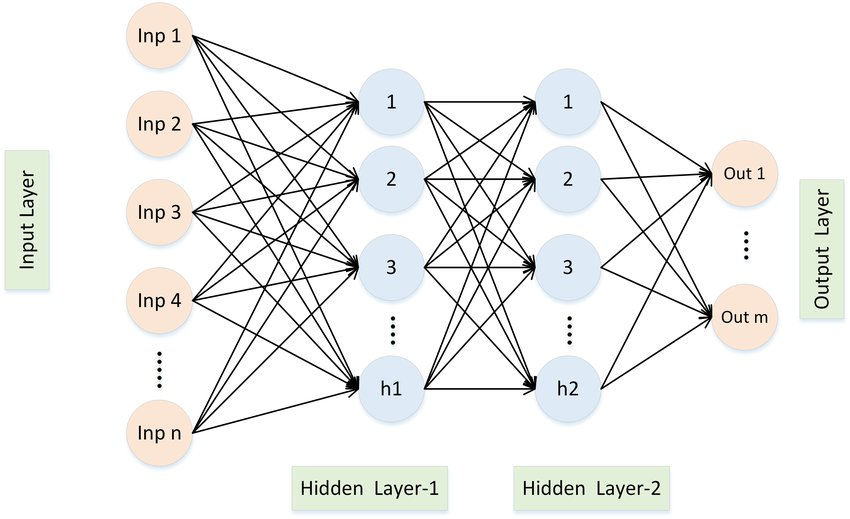
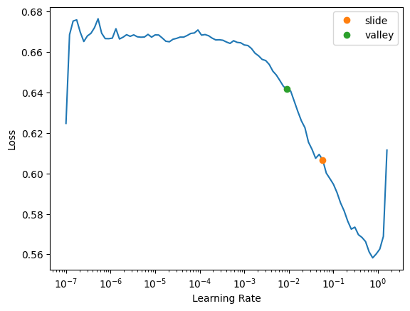
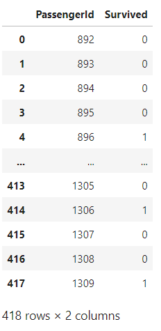
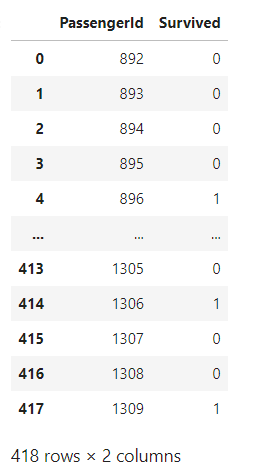

Focusing on Computer Vision and Tabular Data
My primary focus is to write on the lessons and techniques related to building and training models for Computer Vision tasks, such as image classification, object detection, and segmentation. Additionally, I’ll be exploring the methods and best practices for working with Tabular Data for this lecture only.
This chapter focuses on Tabular Data
from fastai.tabular.all import *
set_seed(42)Read & Prepare the data
df = pd.read_csv('../input/titanic/train.csv')
df.head(10)| PassengerId | Survived | Pclass | Name | Sex | Age | SibSp | Parch | Ticket | Fare | Cabin | Embarked | |
|---|---|---|---|---|---|---|---|---|---|---|---|---|
| 0 | 1 | 0 | 3 | Braund, Mr. Owen Harris | male | 22.00 | 1 | 0 | A/5 21171 | 7.25 | NaN | S |
| 1 | 2 | 1 | 1 | Cumings, Mrs. John Bradley (Florence Briggs Thayer) | female | 38.00 | 1 | 0 | PC 17599 | 71.28 | C85 | C |
| 2 | 3 | 1 | 3 | Heikkinen, Miss. Laina | female | 26.00 | 0 | 0 | STON/O2. 3101282 | 7.92 | NaN | S |
| 3 | 4 | 1 | 1 | Futrelle, Mrs. Jacques Heath (Lily May Peel) | female | 35.00 | 1 | 0 | 113803 | 53.10 | C123 | S |
| 4 | 5 | 0 | 3 | Allen, Mr. William Henry | male | 35.00 | 0 | 0 | 373450 | 8.05 | NaN | S |
| 5 | 6 | 0 | 3 | Moran, Mr. James | male | NaN | 0 | 0 | 330877 | 8.46 | NaN | Q |
| 6 | 7 | 0 | 1 | McCarthy, Mr. Timothy J | male | 54.00 | 0 | 0 | 17463 | 51.86 | E46 | S |
| 7 | 8 | 0 | 3 | Palsson, Master. Gosta Leonard | male | 2.00 | 3 | 1 | 349909 | 21.07 | NaN | S |
| 8 | 9 | 1 | 3 | Johnson, Mrs. Oscar W (Elisabeth Vilhelmina Berg) | female | 27.00 | 0 | 2 | 347742 | 11.13 | NaN | S |
| 9 | 10 | 1 | 2 | Nasser, Mrs. Nicholas (Adele Achem) | female | 14.00 | 1 | 0 | 237736 | 30.07 | NaN | C |
df.Name.str.split(', ', expand=True)[1].str.split('.', expand=True)[0].unique()array(['Mr', 'Mrs', 'Miss', 'Master', 'Don', 'Rev', 'Dr', 'Mme', 'Ms',
'Major', 'Lady', 'Sir', 'Mlle', 'Col', 'Capt', 'the Countess',
'Jonkheer'], dtype=object)def add_features(df):
df['LogFare'] = np.log1p(df['Fare'])
df['Deck'] = df.Cabin.str[0].map(dict(A="ABC", B="ABC", C="ABC", D="DE", E="DE", F="FG", G="FG"))
df['Family'] = df.SibSp+df.Parch
df['Alone'] = df.Family==0
df['TicketFreq'] = df.groupby('Ticket')['Ticket'].transform('count')
df['Title'] = df.Name.str.split(', ', expand=True)[1].str.split('.', expand=True)[0]
df['Title'] = df.Title.map(dict(Mr="Mr",Miss="Miss",Mrs="Mrs",Master="Master"))
add_features(df)- df[‘LogFare’] = np.log1p(df[‘Fare’]) It will create a column LogFare with Log() value of Fare column
- df[‘Deck’] = df.Cabin.str[0].map(dict(A=“ABC”, B=“ABC”, C=“ABC”, D=“DE”, E=“DE”, F=“FG”, G=“FG”)) It will create a new ‘Deck’ column based on the first letter of the ‘Cabin’ column. The mapping is done to categorize cabins into groups (ABC, DE, FG).
- df[‘Family’] = df.SibSp+df.Parch It will create a new column ‘Family’ which is the sum of the ‘SibSp’ (number of siblings/spouses) and ‘Parch’ (number of parents/children) columns.
- df[‘Alone’] = df.Family == 0 It will create a column ‘Alone’ for those who don’t have family.
- df[‘TicketFreq’] = df.groupby(‘Ticket’)[‘Ticket’].transform(‘count’) Adds a ‘TicketFreq’ column, representing the frequency of each ticket in the dataset.
- df[‘Title’] = df.Name.str.split(‘,’, expand=True)[1].str.split(‘.’, expand=True)[0] Extracts the title from the ‘Name’ column (e.g., Mr, Miss, Mrs) and assigns it to a new ‘Title’ column.
- df[‘Title’] = df.Title.map(dict(Mr=“Mr”,Miss=“Miss”,Mrs=“Mrs”,Master=“Master”)) Will take into account only these 3 titles anything else will be labelled as “NAN”.
#we can use RandomSplitter to separate out the training and validation sets:
splits = RandomSplitter(seed=42)(df)dls = TabularPandas(
df, splits=splits,
procs = [Categorify, FillMissing, Normalize],
cat_names=["Sex","Pclass","Embarked","Deck", "Title"],
cont_names=['Age', 'SibSp', 'Parch', 'LogFare', 'Alone', 'TicketFreq', 'Family'],
y_names="Survived", y_block = CategoryBlock(),
).dataloaders(path=".")/opt/conda/lib/python3.10/site-packages/fastai/tabular/core.py:312: FutureWarning: A value is trying to be set on a copy of a DataFrame or Series through chained assignment using an inplace method.
The behavior will change in pandas 3.0. This inplace method will never work because the intermediate object on which we are setting values always behaves as a copy.
For example, when doing 'df[col].method(value, inplace=True)', try using 'df.method({col: value}, inplace=True)' or df[col] = df[col].method(value) instead, to perform the operation inplace on the original object.
to[n].fillna(self.na_dict[n], inplace=True)splits=splits Use splits for indices of training and validation sets
procs = [Categorify, FillMissing, Normalize] Turn strings into categories, fill missing values in numeric columns with the median, normalise all numeric columns
cat_names will have all categorical columns
cont_names will have all continuous columns
y_names will have dependent variable
y_block() The dependent variable is categorical (so build a classification model, not a regression model) possible values RegressionBlock(), CategoryBlock(),MultiCategoryBlock()
Train the model
Call dataloader(dls) in tabular_learner & set size of hidden layer = [15,19] defualt is [200,100] layers parameter defines number of neurons in particular neural network.
Architecure of Shallow Neural network: 1. Input Layer 2. First Hidden Layer (15 in our case) 3. Second Hidden Layer (19 in our case) 4. Output Layer

learn = tabular_learner(dls, metrics=accuracy, layers=[15,19])Learning Rate
lr_min, lr_steep, lr_valley, lr_slide = learn.lr_find(suggest_funcs=(minimum, steep, valley, slide))
Lr_find(suggest_func= (slide, valley)) is great way to find learning rate for any model. There are multiple ways of do this, and in this case, we are using slide& valley methods. By picking one value among these two values we will get pretty good learning rate value
Generally it is established that: Valley > Slide > Steep > Minimum. Hence by defualt we use valley & slide to get best of both.
learn.lr_find(suggest_funcs=(slide, valley))SuggestedLRs(slide=0.05754399299621582, valley=0.009120108559727669)
The two colored points are both reasonable choices for a learning rate. I’ll pick somewhere between the two (0.04) and train for a few epochs:
learn.fit(20, lr=0.04) # 20 will define no of epoch| epoch | train_loss | valid_loss | accuracy | time |
|---|---|---|---|---|
| 0 | 0.594998 | 0.572238 | 0.679775 | 00:00 |
| 1 | 0.515863 | 0.466670 | 0.803371 | 00:00 |
| 2 | 0.476732 | 0.433698 | 0.825843 | 00:00 |
| 3 | 0.446953 | 0.415818 | 0.848315 | 00:00 |
| 4 | 0.434874 | 0.434143 | 0.831461 | 00:00 |
| 5 | 0.421784 | 0.410992 | 0.820225 | 00:00 |
| 6 | 0.412457 | 0.430165 | 0.831461 | 00:00 |
| 7 | 0.407657 | 0.404660 | 0.820225 | 00:00 |
| 8 | 0.403021 | 0.412289 | 0.825843 | 00:00 |
| 9 | 0.397732 | 0.416126 | 0.837079 | 00:00 |
| 10 | 0.394886 | 0.422662 | 0.842697 | 00:00 |
| 11 | 0.393001 | 0.441775 | 0.814607 | 00:00 |
| 12 | 0.391272 | 0.431170 | 0.842697 | 00:00 |
| 13 | 0.388350 | 0.409692 | 0.831461 | 00:00 |
| 14 | 0.382384 | 0.416130 | 0.837079 | 00:00 |
| 15 | 0.379093 | 0.426817 | 0.820225 | 00:00 |
| 16 | 0.374646 | 0.428383 | 0.820225 | 00:00 |
| 17 | 0.375685 | 0.453301 | 0.808989 | 00:00 |
| 18 | 0.376625 | 0.411430 | 0.820225 | 00:00 |
| 19 | 0.374332 | 0.463273 | 0.825843 | 00:00 |
Submit to Kaggle
To submit to Kaggle, we’ll need to read in the test set, and do the same feature engineering we did for the training set:
tst_df = pd.read_csv('../input/titanic/test.csv')
tst_df['Fare'] = tst_df.Fare.fillna(0)
add_features(tst_df)We don’t have to worry about pre-processing in our test dataset , we can call test_dl(), but we have to take care of NA value in target column if it didn’t existed in training because NA in target column wasn’t pre-processed so our function test_dl() do not have it’s recollection.
tst_dl = learn.dls.test_dl(tst_df)/opt/conda/lib/python3.10/site-packages/fastai/tabular/core.py:312: FutureWarning: A value is trying to be set on a copy of a DataFrame or Series through chained assignment using an inplace method.
The behavior will change in pandas 3.0. This inplace method will never work because the intermediate object on which we are setting values always behaves as a copy.
For example, when doing 'df[col].method(value, inplace=True)', try using 'df.method({col: value}, inplace=True)' or df[col] = df[col].method(value) instead, to perform the operation inplace on the original object.
to[n].fillna(self.na_dict[n], inplace=True)Now we can use get_preds to get the predictions for the test set:
preds,_ = learn.get_preds(dl=tst_dl)Let’s get our predictions
tst_df['Survived'] = (preds[:,1]>0.6).int()
sub_df = tst_df[['PassengerId','Survived']]
sub_df
Ensembling
We can create five separate models, each trained from different random starting points, and average them. This is the simplest approach of ensemble model
def ensemble():
learn = tabular_learner(dls, metrics=accuracy, layers=[20,18])
with learn.no_bar(),learn.no_logging(): learn.fit(12, lr=0.05)
return learn.get_preds(dl=tst_dl)[0]Now we run this five times, and collect the results into a list:
learns = [ensemble() for _ in range(5)]We stack this predictions together and take their average predictions:
ens_preds = torch.stack(learns).mean(0)Finally, use the same code as before to generate a submission file, which we can submit to Kaggle after the notebook is saved and run:
tst_df['Survived'] = (ens_preds[:,1]>0.55).int()
sub_df = tst_df[['PassengerId','Survived']]
sub_df